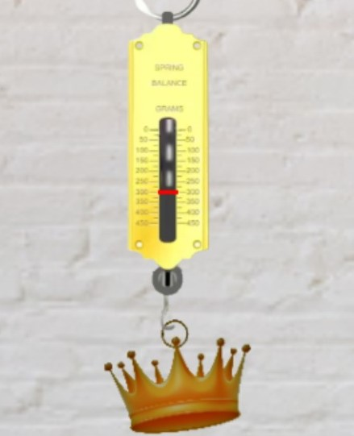

Archimedes' principle states that the upward buoyant force that is exerted on a body immersed in a fluid, whether fully or partially, is equal to the weight of the fluid that the body displaces
Formulae:-
Weight of displaced fluid=weight of object in vacuum-weight of object in fluid
The weight of the displaced fluid is directly proportional to the volume of the displaced fluid The weight of the object in the fluid is reduced, because of the force acting on it, which is called upthrust. In simple terms, the principle states that the buoyant force (Fb) on an object is equal to the weight of the fluid displaced by the object, or the density (ρ) of the fluid multiplied by the submerged volume (V) times the gravity (g).
Fa =ρgV
where 1) Fa=The buoyant force applied onto the submerged object. 2) ρ=the density of the fluid 3) g=acceleration due to gravity. 4) V=Volume of displaced fluid
Steps to perform the experiments.
There are 4 buttons given below.
Step 1) Click on any one of the button at a time ie Copper Crown or Iron Crown
Step 2)Click on the Start Experiment Button to Execute the experiment
Step 3)Click on the Measure Readings button to Measure and Calculate the Readings
Step 4)After taking the readings,calculate using the given above formulae.
Calculations :-
If we submerge the copper crown in the beaker
Weight of Copper Crown in air=300 grams

Weight of Copper Crown in water=266.67 grams
Weight of water displaced=Volume of Crown=33.33 grams
Density of Copper Crown=Mass/Volume
Density of Copper Crown=300/33.33
Density of Copper Crown=9.00 gm/cm3
FunFact:-
Archimedes has gone down in history as the guy who ran through the streets of Syracuse shouting "Eureka!" — or "I have it!" in Greek. The story behind that event was that Archimedes was charged with proving that a new crown made for Hieron, the king of Syracuse, was not pure gold as the goldsmith had claimed.
Archimedes thought long and hard but could not find a method for proving that the crown was not solid gold. Soon after, he filled a bathtub and noticed that water spilled over the edge as he got in and he realized that the water displaced by his body was equal to the weight of his body. Knowing that gold was heavier than other metals the crown maker could have substituted in, Archimedes had his method to determine that the crown was not pure gold.